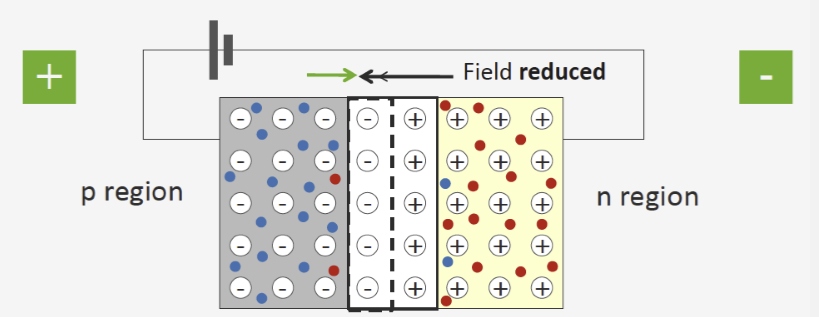
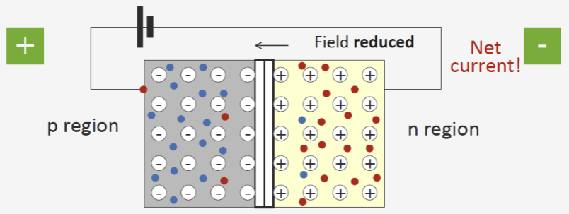
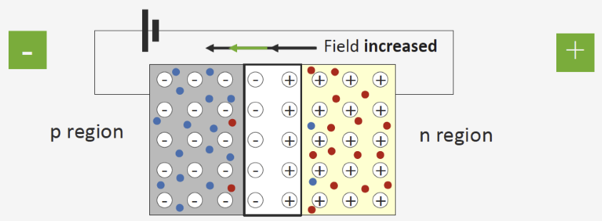
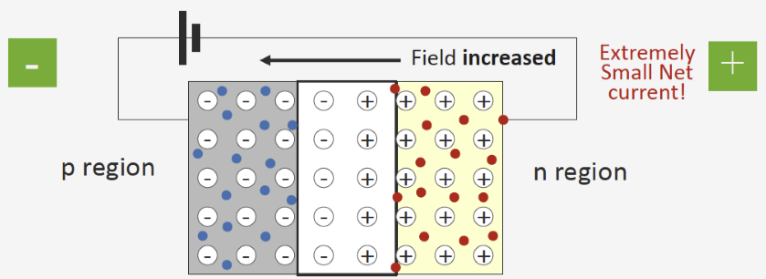

다이오드의 정류 작용
순방향 전압을 인가했을 때
 위 그림과 같이, pn 접합 구조인 다이오드를 회로에 연결하여 p 타입에 +, n 타입에 -의 전압을 걸어주는 것을 순방향으로 정의합니다. 이렇게 순방향 전압을 걸어주게 되면, p는 +, n은 -의 극성을 띠게 되는데요, 공핍층에 있던 전기장의 방향과 반대이므로 전기장이 약해지며 carrier가 공핍층을 통해 이동할 수 있게 됩니다. 그래서 순방향 전압을 걸어주게 되면 회로에 전류가 흐를 수 있습니다.
역방향 전압을 인가했을 때
 이전과 반대로, 역방향으로 전압을 인가하면 공핍층에 존재하던 전기장의 극성과 일치하게 됩니다. 따라서 외부에서 전원을 인가했음에도 불구하고 전기장에 가로막혀 전류가 흐르지 않게 됩니다. 결과적으로, p형 반도체와 n형 반도체를 접합한 다이오드는 순방향 전압은 흘려주고 역방향 전압은 차단하는 전자부품의 역할을 하게 됩니다.